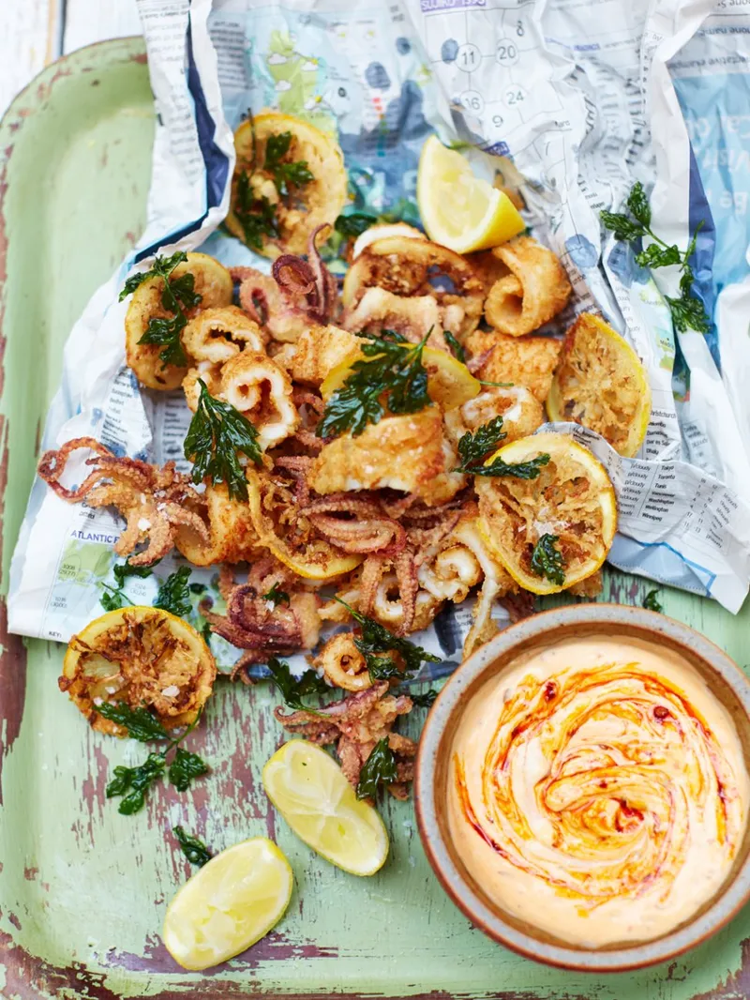

Party Squid for everyone!
Fresh, crispy squid dunked into this beautifully bold harissa mayo – perfect for feeding a crowd

We will need...
- 3 lemons
- 3 sprigs of flowering oregano
- 2 tablespoons fennel seeds
- freshly ground white pepper
- 300 g plain flour
- 12 whole medium squid , prepared, with tentacles, from sustainable sources
- vegetable oil , for deep-frying
- a small bunch of fresh flat-leaf parsley
- 1 clove of garlic
- 3 heaped tablespoons mayonnaise
- 1.5l of water
- 4 teaspoons harissa paste
- 1½ teaspoons rose water
And with that we are gonna...
- To make the harissa mayo, peel and bash the garlic in a pestle and mortar with a little sea salt, then muddle in the mayo. Add 2 teaspoons of harissa, followed by the zest and juice from ½ a lemon, then mix well, taste and add a little more lemon juice, if needed. Transfer to a bowl, drizzle over the rosewater and ripple through the remaining harissa. Set aside.
- Scrunch the oregano flowers into a liquidiser and discard the stalks, then add the fennel and a teaspoon each of salt and white pepper. Blitz to a fine powder, then place into a large bowl with the flour and stir to combine.
- Wash and pat dry the squid, then slice and open out the tubes like a book. Cut a criss-cross pattern onto the surface, then add to the flour along with the tentacles and toss well to coat.
- Place a large, deep saucepan over a medium-high heat. Fill three-quarters full with vegetable oil and allow to heat up. To test if the oil is hot enough, drop a piece of bread into the pan – if the bread floats to the surface, sizzles and turns golden, it's about right. Shake off any excess flour from the squid, then use a slotted spoon to carefully lower into the hot oil (you’ll need to do this in batches). Cook for 3 to 4 minutes, or until golden, crisp and cooked through. Transfer to a double layer of kitchen paper to drain, then repeat with the remaining squid.
- Rinse the parsley sprigs under cold running water, shake off any excess water, then pick the leaves into the flour. Toss to coat, then lower into the hot oil for a few seconds, or until crisp. Transfer to kitchen paper, then slice 1 lemon horizontally into thin discs, dip into the flour and place in the hot oil for around 1 minute, or until crisp.
- Scatter the crispy parsley and lemon slices over the squid, then serve with extra lemon wedges for squeezing over and harissa mayo for dunking.
Merry Christmas!
take me back